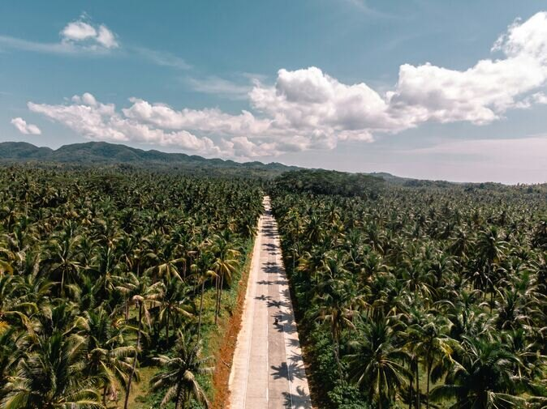
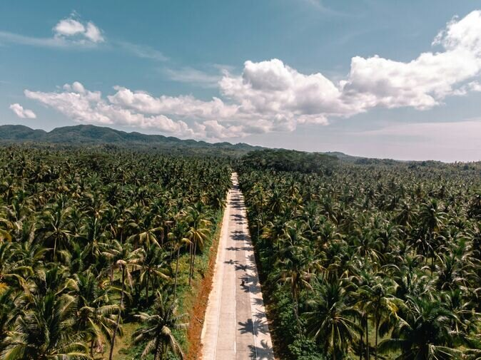

Siargao
Named after a native mangrove, the surf capital of the Philippines is perfect for lovers of the great outdoors, whether you embrace adrenaline-fuelled adventure sports or gentler pursuits such as swimming in rock pools and caves. Life is centred on the white-sand beaches, so there's also plenty of scope to lie back and relax.
 

Siargao has a lively nightlife scene focused on different bars on different nights of the week, so chatting to locals is the best way to find out where to head. Regular venues include Bravo, RumBar, Viento and the Jungle Shack. Another way to get to know locals is through their love of karaoke, both in their own homes and in dedicated bars.